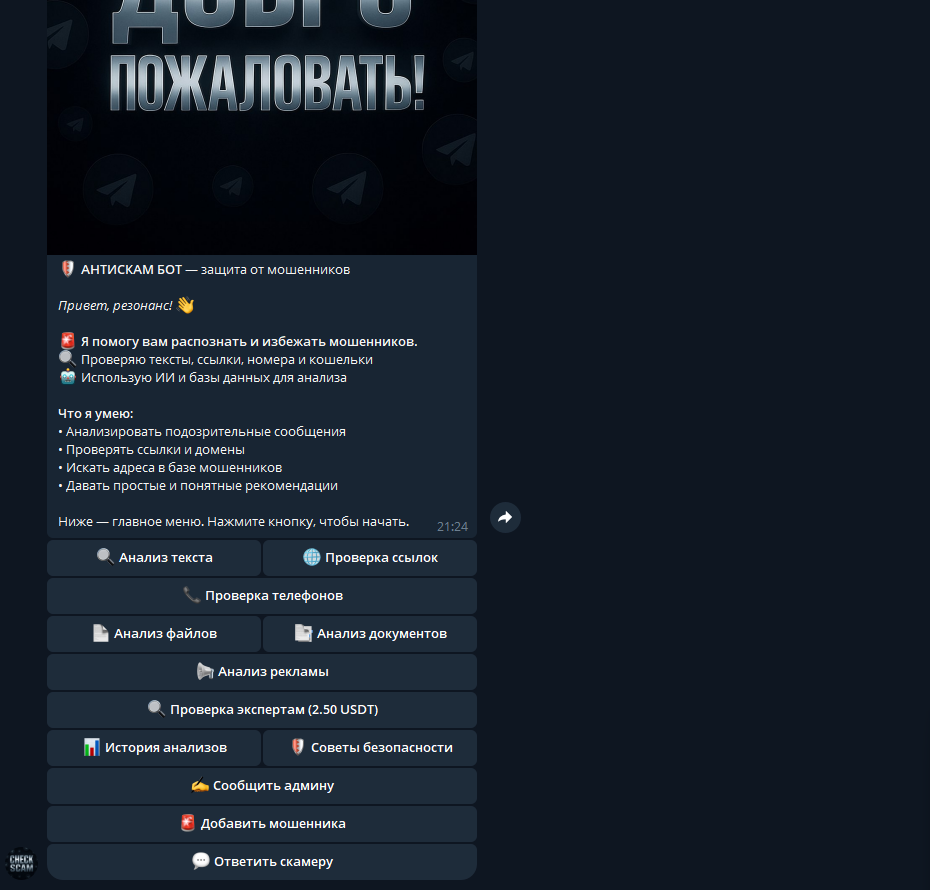

ИИ-анализ
Анализ подозрительных материалов с помощью языковой модели.
PERSONAL DATA STORAGE
Обнаружен архив с несколькими незавершёнными записями.
Часть материалов доступна. Остальные требуют подтверждения доступа.
Если ты здесь, значит, тебе разрешили посмотреть немного глубже.
Инициализация архива...
Подсказки:
«Как думаешь, чем занимается автор архива?»
CASE CLOSED — доступ подтверждён. Раздел PLAYER открыт.
PERSONAL DATA STORAGE / MAIN INDEX
Семь разделов. Истории, детали и маленькие секреты, которые складываются в одну большую картину.
Завершённые разделы 0 из 7
CS:GO
Соревновательный Counter-Strike, анализ решений, адаптация.
«Мне нравится не только сам процесс игры. Гораздо интереснее наблюдать за тем, как принимаются решения, замечать привычки соперника и пытаться понять, что он собирается сделать дальше.
Иногда один правильно прочитанный момент важнее нескольких быстрых действий».
Ситуация:
«Что я постараюсь сделать в первую очередь?»
«Мне нравится находить закономерности. Наверное, поэтому меня так увлекают игры, где нужно не только быстро реагировать, но и думать».
Найдена буква: M
PERSONAL INFORMATION SECURITY DATABASE
BUILD 02.2Мой путь в информационной безопасности: проекты, исследования, изучение угроз и планы на будущее. Выбери модуль, чтобы открыть соответствующее досье.
Личный антискам-проект, его история и технические особенности.
Кейсы, открытые источники, инструменты и методы исследования.
Журнал обучения: домены, DNS, сетевые протоколы и фишинг.
Профессиональные цели, образование и будущие проекты.
HELP — список доступных команд
ENTER ↵Проект против интернет-мошенничества. Создавался, чтобы помогать людям проверять подозрительную информацию и замечать мошеннические схемы.

Анализ подозрительных материалов с помощью языковой модели.
Сохранение сведений о выявленных мошеннических аккаунтах и проверках.
Возможность отправить обращение администратору проекта.
Во время моих проверок я помогал выявлять мошенников среди продавцов и покупателей.
Нужна была качественная языковая модель с невысокой стоимостью API.
Я переключился с медиа-деятельности на более глубокое изучение информационной безопасности. Исходники проекта сейчас утеряны, но я рассматриваю возможность восстановления.
«Моего друга скамнули на NFT-подарок в Telegram. Большинство моих знакомых тоже чуть не потеряли свои кровные деньги в Telegram».
«Больше всего мне нравилось их разоблачать. С дальнейшими действиями могли разбираться мои кореша из Telegram-конфы. Сейчас я перестал этим заниматься и глубже ушёл в информационную безопасность».
«С этим ботом я начал получать известность среди белых OSINT-еров. Меня могли узнавать даже в небольших тематических чатах».
«Они не стоят на месте и используют разные подходы, чтобы получить желаемое. Условно я видел две стороны: одни могут льстить и обещать вдвое больше себестоимости NFT-подарка, а другие при покупке или продаже NFT используют фейковых гарантов, поддельные чеки и вообще всё поддельное — лишь бы покупатель перевёл деньги или передал товар первым».
«Проверить на достоверность».
«Пока стоп. Проект в заморозке, исходники утеряны. По возможности я постараюсь всё восстановить».STATUS: FROZEN
Направления, инструменты и первые практические исследования открытой информации.
Поиск и сопоставление информации из общедоступных записей и открытых источников.
Изучение открытой информации, опубликованной в социальных сетях.
Исследование открытых источников, в котором удалось обнаружить и сопоставить сведения о коммерческой деятельности и публичных регистрационных данных.
Этот кейс стал первым практическим опытом и самым запомнившимся на старте.
«Это был мой первый кейс».
Журнал изучения фишинга и смежных сетевых тем. Главная задача — научиться распознавать угрозы и понимать, какие признаки делают ссылку или сообщение подозрительными.
Однажды мне отправили фишинговую ссылку в личные сообщения Telegram. К счастью, я не перешёл по ней — этот случай стал отправной точкой моего интереса к теме.
Разница между HTTP и HTTPS, роль TLS, шифрование и аутентификация сервера.
Назначение SSH и безопасное удалённое управление.
Различия между обычной передачей файлов и защищённым вариантом.
Назначение DNS, MX-записей и SPF-политик.
Проверка доменного имени, поддоменов и признаков имитации известных сервисов.
Изучение сетевых портов и их роли в работе сервисов.
Мне обычно удаётся распознать фишинг по признакам, но не всегда получается сразу вспомнить точное название техники. Поэтому в журнале предусмотрен отдельный словарь терминов с короткими определениями и примерами.
Профессиональные ориентиры и планы, которые пока находятся в развитии.
Изучение социальной инженерии с защитной стороны: распознавание манипуляций, предотвращение обмана и повышение осведомлённости.
Поступление и обучение в университете как часть профессионального пути.
Параллельное развитие в медиа.
Освоение тех навыков, которые доступны для изучения и практики на текущем этапе.
Создание мощных проектов с минимальными или нулевыми финансовыми вложениями.
Работать в престижной организации и превратить личный интерес к информационной безопасности в профессию и источник дохода.
«Работать в самом престижном месте, чтобы мой интерес приносил доход».
Какой адрес выглядит подозрительнее остальных?
«Важно смотреть не на знакомые слова в адресе, а на настоящий домен. Название бренда внутри чужого домена ещё не делает сайт официальным».
Найдена буква: I
«Для меня дружба — это не только весёлое времяпрепровождение. Это когда в трудный момент человек может поддержать тебя, помочь разобраться с проблемой или просто направить в нужную сторону.
Иногда даже небольшие жесты значат гораздо больше, чем кажется».
«Для меня время наедине с собой — это спокойствие, расслабление и множество хороших чувств.
Иногда хочется просто остаться в тишине, никуда не торопиться и побыть со своими мыслями. Я не считаю, что каждую свободную минуту нужно заполнять чем-то или кем-то».
«Я не всегда могу подобрать правильные слова. Иногда понимаю, что сказал что-то не то, уже после разговора.
Но для меня важно уметь это признать и извиниться. Я не считаю, что нужно всегда быть правым. Если я сказал что-то неровное, скажи что я это было обидно, я извинюсь».
Эта запись ещё не закончена.
Найди символы в карточках выше. Каждый из них оставляет след.
Подсказка: символы находятся в левом нижнем углу карточек.
«Не все мысли легко объяснить словами. Некоторые проще оставить здесь, чем пытаться сформулировать в разговоре».
Найдена буква: N
бля).
много любимых треков, но мои любимые артисты - kizaru, dekma, платина.
гулять обожаю, и дома быть одному.
TS ONE LOVE <3.
а что со мной будет через несколько лет? наверно меня зарежут на лесополосе)).
надо сурсы бота вернуть, а то скучно.
ENTER ACCESS CODE
Пароль собирается из четырёх букв: PLAYER · CYBER · MIND · UNKNOWN
«Если ты дошла до этой страницы, значит, тебе удалось собрать все фрагменты.
Я специально оставил эту запись напоследок. Не потому, что она самая важная или сложная, а потому, что хотел оставить что-то неожиданное.
Вообще, мне было интересно создать для тебя нечто большее, чем обычный подарок. Что-то, что можно исследовать, находить и постепенно открывать.
И теперь осталось только последнее».
«Надеюсь, тебе понравилось небольшое путешествие по этому архиву.
Я хотел сделать подарок, в который можно вложить не только деньги или красивые вещи, но и время, идеи и частичку себя.
Спасибо тебе за общение, совместные моменты и за то, что ты есть в моей жизни.
Желаю тебе побольше хороших дней, интересных событий, исполнения желаний и людей, рядом с которыми можно оставаться собой.
Пусть впереди будет много приятного и неожиданного.
С днём рождения!»
END OF ARCHIVE 022